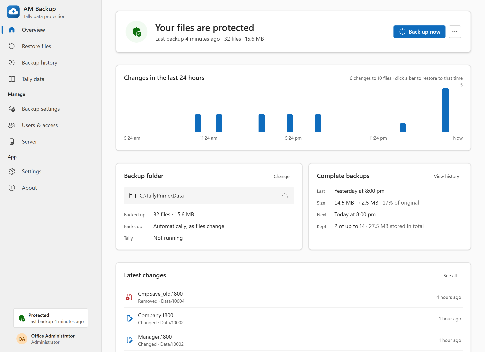

User manual · Version 1.0
Back up and restore your Tally data

AUTOFICIAL / LABS
Developed by AFLABS · autoficial.ltd
This manual tells you how to use AM Backup. AM Backup keeps a copy of your Tally data on a secure server. It can put your data back after an error or a failure.
Click a task below to go to its procedure. Click a blue link anywhere in this manual to go to the related text. Use the bookmarks panel of your PDF reader to move between chapters.
| Back up now | A name on the screen, for example a button, a menu item or a page name. |
| 1 | A step in a procedure. Do the steps in the given sequence. |
| 1 | A callout on a screen picture. The list below the picture tells you what the callout shows. |
| CAUTION | Read this before you continue. If you do not obey it, you can lose data. |
| NOTE | Information that helps you to do the task. |
| Administrator | Only the administrator account can do this task. |
AM Backup is a computer application. It makes copies of the files in one folder and sends them to a server. Usually, this folder is the Tally data folder.
The administrator controls the server, the users and the backup schedule. Other users can restore files from the folders that the administrator gives to them.
Tally keeps its company files open while it operates. If Tally saves a voucher during a copy, the copy can be incomplete. Thus AM Backup copies a company when Tally saved nothing for 3 minutes.
After the copy, AM Backup examines all the files of that company again. If a file changed during the copy, AM Backup discards the copy. It makes a new copy at the next quiet time. Thus Tally can stay open all day.
NOTE
The administrator can set AM Backup to wait until Tally closes. Refer to 4.6 When Tally is open.
| Account | What the account can do |
|---|---|
| Administrator | All tasks. Adds and removes users. Sets the backup schedule. Restores complete backups. There is only one administrator account. |
| Read and write | Sees the shared folders. Restores files from them. Can also back up these folders from his or her own computer. |
| Read only | Sees the shared folders and restores files from them. Cannot back up files. |
Make sure that you have these items:
NOTE
You do not need administrator rights on Windows to install AM Backup. The application installs for your Windows account only.
AM Backup asks for the server only when it starts for the first time. If your IT support prepared the application for your office, the server is already set. Then go to 2.5 Sign in.
Do this procedure one time only, on a new server. AM Backup shows this screen when the server has no administrator account.
CAUTION
Keep the setup key in a safe place. You need it to reset the administrator password. Do not give the setup key to other users.
NOTE
After 5 incorrect passwords, AM Backup locks the account for 5 minutes. The administrator can unlock it at once. Refer to 7.6 Other user tasks.
AM Backup operates in the background. Its icon is in the notification area of the Windows taskbar. When you close the window, AM Backup continues to make backups.
CAUTION
If you quit AM Backup, it stops all backups. Start AM Backup again from the Start menu.
Do this procedure one time only, on the computer of the administrator. AM Backup makes the server in the Cloudflare account of your office. You do not need other programs.
Make sure that you have these items:
NOTE
AM Backup uses the token only during the setup. It does not keep the token. After the setup, you can delete the token in Cloudflare.
CAUTION
Keep the setup key in a safe place. If you lose the administrator password and the setup key, you can make a new key. On the sign-in screen, click Forgot the administrator password?. Then click Make a new one with your Cloudflare account.
The Server page shows the address of the server. Give this address to the users. Each user installs AM Backup, clicks Online server and types the address.
A new version of AM Backup can have a new version of the server program. Then the Server program line tells you. To update the server:
The update keeps all users, settings and backups.
The Overview page shows the status of your backups. It is the first page when you open AM Backup.
| Status | Meaning | What to do |
|---|---|---|
| Protected | All files have a backup. | Nothing. |
| Changes detected | Files changed. AM Backup waits until the files stop to change. | Nothing. The backup starts after approximately 1 minute. |
| Backing up | AM Backup sends changed files to the server. | Nothing. You can continue to work. |
| Waiting for Tally | Tally is open. AM Backup waits until you close Tally. | Close Tally at the end of your work. Refer to 4.6. |
| Paused | Automatic backups are off. | Resume the backups. Refer to 4.5. |
| Can't reach the server | There is no connection to the server. | Examine the internet connection. AM Backup tries again automatically. |
| Needs attention | A backup failed. | Read the message. Refer to 10 Troubleshooting. |
Do this procedure on the computer that has the Tally data. Usually, the Tally data folder is C:\TallyPrime\Data or C:\Tally.ERP9\Data. In Tally, the folder path shows on the company selection screen.
The first backup sends all the files. Later backups send only the files that changed.
NOTE
You cannot select a full drive, for example C:\. Select a folder.
AM Backup examines the backup folder all the time. When a file changes, AM Backup waits 1 minute for more changes. Then it sends the changed files to the server. If Tally is open, it waits until Tally saved nothing for 3 minutes. Refer to 4.6.
The administrator can change when backups start. Refer to 8 Backup settings.
Use this procedure before an important change, for example before you delete vouchers or close a financial year.
AM Backup compresses the complete backup. Usually, the archive is much smaller than the original files.
CAUTION
When you pause the backups, AM Backup does not protect new work. Resume the backups as soon as possible.
AM Backup has two methods for Tally. The administrator selects the method on the Backup settings page.
Back up between Tally entries. Use this method if Tally stays open all day. AM Backup copies a company when Tally saved nothing for 3 minutes. Then it examines the copy. If Tally saved a file during the copy, AM Backup discards the copy and tries again later. While AM Backup waits, the status shows Tally is open.
Wait until Tally closes. AM Backup makes no backup while Tally is open. The status shows Waiting for Tally. Close Tally at the end of your work. Then AM Backup makes the backup automatically. If you must have a backup while Tally is open, click Back up anyway on the Overview page.
For a complete backup while Tally is open, AM Backup first makes a fast copy of the folder on this computer. It examines the copy. Then it compresses the copy and sends it to the server.
CAUTION
With the method Wait until Tally closes, a backup that you start with Back up anyway can contain incomplete files.
You can restore files in two ways:
CAUTION
Close Tally on all computers before you restore files into the Tally data folder. If Tally is open, it can write over the restored files.
The safest method is to restore into a different folder. Then examine the restored data. Copy it into the Tally data folder only if it is correct.
NOTE
You can also start from the Overview page. Click a bar on the chart. AM Backup opens Restore files at that time.
A square in a checkbox tells you that you ticked some subfolders of that folder.
The comparison does not change files. It shows you what the restore will do.
| Type of change | Meaning |
|---|---|
| Will be restored | The file is not in the destination. The restore adds it. |
| Will be replaced | The file in the destination is different. The restore replaces it with the backup copy. |
| Only in destination | The file was not in the backup at that time. The restore keeps it, unless you tell it to remove it. |
| Already identical | The file is the same. The restore does not change it. |
If AM Backup has Tally data for the companies, the In Tally box shows what the restore changes in Tally. For example, it tells you how many vouchers the restore removes.
When the restore is complete, AM Backup shows the result:
NOTE
AM Backup examines each restored file against its backup copy. Each restored file also keeps its original date and time.
If you restored files into the Tally data folder, the next backup records the restored files. The server also keeps the versions from before the restore.
The Backup history page shows each backup, with the newest first. The page puts the backups in groups by day.
CAUTION
You cannot restore a deleted complete backup. The history of each file does not change.
The Tally data page shows the companies, ledgers and vouchers as Tally had them at the time of each backup. AM Backup reads this data from Tally when it backs up a company. It does this a maximum of one time each hour for each company.
NOTE
Balances show Dr for debit and Cr for credit, as in Tally.
Each row has a word: Added, Changed or Removed. The rows also have a color: green, blue or red. The Ledger balances list shows the balances that are different.
AM Backup reads Tally data through the XML server of Tally. Turn it on one time, on the computer where Tally operates.
TallyPrime:
Tally.ERP 9:
Open the Tally data page. It shows Connected to Tally.
NOTE
Tally data starts on the day that you turn on the connection. AM Backup cannot read Tally data from older backups.
The Users & access page shows all accounts. Only the administrator can see this page.
| Folder access | The user sees |
|---|---|
| Everything | All folders, also new folders. |
| Only selected folders | Only the folders that you tick, and their subfolders. |
| All except selected | All folders, but not the folders that you tick. |
| Nothing for now | No folders. The user can sign in, but sees no files. |
NOTE
Each Tally company has its own numbered folder, for example Data/10001. Open Tally to see the number of each company.
The change has an effect immediately. The user does not have to sign in again.
AM Backup signs the user out on all computers. The user must sign in with the new password.
AM Backup signs the user out on all computers immediately. To give the access back, click Restore access in the same menu.
| Task | Menu item (… button) |
|---|---|
| Let a locked user sign in again | Unlock sign-in |
| Sign out a user on all computers | Sign out everywhere |
| Remove a user permanently | Delete user |
NOTE
When you delete a user, the backups of that user stay in the history.
The Backup settings page has the rules for all computers that make backups. Only the administrator can change the rules. Other users with write access can select the backup folder only.
| Setting | Options | Default |
|---|---|---|
| When to back up | As files change (recommended), on a timer, or only when you ask. | As files change |
| Wait for files to settle | 15 seconds to 15 minutes. | 1 minute |
| Back up every | 15 minutes to 24 hours. Only for “On a timer”. | 30 minutes |
| When Tally is open | Back up between Tally entries (recommended), or wait until Tally closes. | Back up between Tally entries |
| Quiet time before a backup | 1 minute to 15 minutes. Only for “Back up between Tally entries”. | 3 minutes |
| After Tally closes, wait | 0 seconds to 5 minutes. Only for “Wait until Tally closes”. | 30 seconds |
| Names of the Tally programs | Program names, for example tally.exe. | tally.exe, tallyprime.exe, tallyprimeserver.exe |
| Save Tally data with backups | On or off. | On |
| Save Tally data at most every | 15 minutes to 8 hours. | 1 hour |
| Port of the Tally XML server | The port in the Tally setting. Refer to 6.3. | 9000 |
| Complete backups: how often | Every day, every few hours, once a week, or off. | Every day at 8:00 pm |
| Compression | Balanced, high or maximum. Maximum gives the smallest backups. | Maximum |
| Keep the latest | 1 to 365 complete backups. | 14 |
| Keep every change for | 7 days to 1 year, or forever. | 30 days |
| Skipped file types | Temporary files, lock files and other types that you add. | *.tmp, ~$*, Thumbs.db, desktop.ini, .DS_Store |
The new rules apply to all computers in some minutes. To cancel your changes, click Discard.
NOTE
If the computer is off at the time of a complete backup, AM Backup makes it when the computer starts again.
AM Backup signs you out on your other computers.
AM Backup sets this setting to on when it starts for the first time. Then backups continue after the computer starts again. If somebody set it to off, set it to on again:
NOTE
AM Backup starts when a person signs in to Windows, the same as Tally. After the computer restarts, sign in to Windows. Then AM Backup starts in the notification area.
The Settings page also shows the last events on this computer. For the administrator, it also shows sign-ins and changes by all users. To send the full log to your IT support, click Open log folder.
| Problem | Possible cause | Remedy |
|---|---|---|
| The status stays at Waiting for Tally. | The method is “Wait until Tally closes”, and Tally is open. | Close Tally. Or ask the administrator to select “Back up between Tally entries”. Refer to 4.6. |
| The status stays at Tally is open for a long time. | Tally saves files all the time, for example during an import. | Nothing. AM Backup makes the backup at the next quiet time. |
| The Tally data page shows Tally not connected. | The XML server of Tally is off, or Tally is not open on this computer. | Turn on the XML server. Refer to 6.3. |
| The server setup stops at R2 storage. | R2 is not on in the Cloudflare account. | In Cloudflare, open R2 and turn it on. Then click Check again. Refer to 2.7. |
| The server setup tells you that the token cannot do a step. | The token does not have all four permissions. | Make a new token with Open Cloudflare token page. Refer to 2.7. |
| The status shows Can't reach the server. | There is no internet connection, or the server address is incorrect. | Examine the connection. AM Backup tries again automatically. If the problem continues, speak to your IT support. |
| A message tells you that some files could not be read. | A different program used the files. | Nothing. AM Backup tries again later. If the problem continues, close Tally. |
| The status shows The backup folder is not available. | The drive or the network folder has no connection. | Connect the drive. Or select the folder again. Refer to 4.1. |
| The sign-in fails with Too many attempts. | Five incorrect passwords. | Wait 5 minutes. Or ask the administrator to unlock the account. Refer to 7.6. |
| The app tells you that the administrator revoked your access. | The administrator revoked your access. | Speak to the administrator. |
| The administrator forgot the password. | — | On the sign-in screen, click Forgot the administrator password?. Type the setup key and a new password. If you do not have the setup key, refer to 2.7. |
| Some files show The file is in use or protected after a restore. | Tally or a different program used the files. | Close Tally. Do the restore again. AM Backup restores only the files that are different. |
| The Users & access page or a complete backup is not shown. | Your account is not the administrator account. | Speak to the administrator. |
| A folder is not in the folder tree. | The folder has no backup yet, or you have no access to it. | Wait for the next backup. Or ask the administrator to give you access. |
This chapter is for the person who installs the server. The file README.md in the source code gives the full procedures.
| Item | Value |
|---|---|
| Server | Cloudflare Worker. D1 database for accounts, permissions and the file index. R2 storage for file data and complete backups. |
| Test server | Use Localflare (npx localflare in the server folder). The address is http://localhost:8787. |
| Production | Use Set up a new server in the app (refer to 2.7). The app makes the Worker, the D1 database, the R2 bucket, the nightly task and the setup key. To use Wrangler, refer to README.md. |
| Cloudflare token | Account Settings: Read, Workers Scripts: Edit, D1: Edit, Workers R2 Storage: Edit. The app does not keep the token. |
| Tally connection | The XML server of Tally on 127.0.0.1, port 9000 by default. |
| Preset server address | Set AM_BACKUP_SERVER_URL when you build the installer. Then users do not type the address. |
| Settings file | %APPDATA%\ltd.autoficial.ambackup\config.json |
| Log file | %LOCALAPPDATA%\ltd.autoficial.ambackup\logs\am-backup.log |
| Housekeeping | Each night at 03:17 UTC, the server removes history older than the set number of days and unused data. |
This manual uses the rules of ASD-STE100 Simplified Technical English (STE). The text uses short sentences, the active voice and simple words. Each step in a procedure has one instruction.
An automatic check examined these five STE rules:
The result: —.
The automatic check does not examine all the words against the STE dictionary. Thus the result is not a formal STE audit.
AUTOFICIAL / LABS
AM Backup is designed and developed by AFLABS.
© 2026–2027 AFLABS. Tally, TallyPrime and Tally.ERP 9 are trademarks of Tally Solutions Pvt. Ltd. Windows is a trademark of Microsoft Corporation. Cloudflare is a trademark of Cloudflare, Inc.